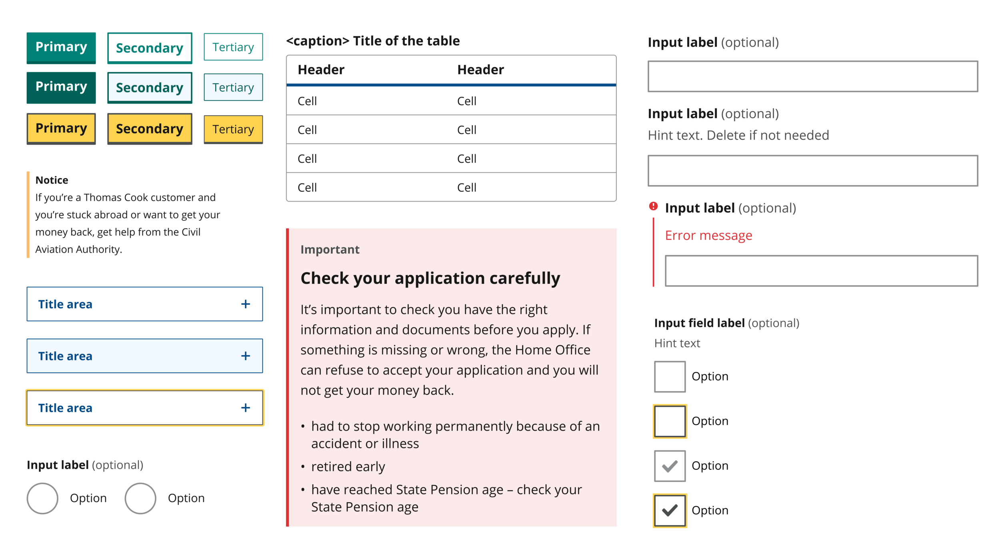

An Accessible Design System for Citizens Advice

Introduction
In my first role at Citizens Advice, I played an integral part in developing an accessible design system for the organisations’ 3 main websites - the public site, the adviser site and the intranet. The design system is currently being introduced on the public and adviser facing websites and will improve the accessibility of around 2000 advice articles. It has also streamlined our design and development processes. See the design system in action on our new styled immigration pages.
Background Citizens Advice 3 main websites are being migrated to a new headless content management system. As part of this work, we rebuilt the front-end for all three using an accessible design system. This work grew from collaboration between design and front-end and started out as self-organised work which took place in our communities of practice. We’re really proud of what we’ve achieved and the Design System is now part of the organisation’s strategy.
Process
Developing an accessible colour language Working with the contrast and focus ring guidelines on WCAG 2.1 Developing a semantic colour language so colours were defined by usage not arbitrary names in order to ensure consistency of use.
Redesigning and rebuilding each component with a focus on accessibility Looking to gov and the NHS for A11y best practice, as well as ensuring each component met the AA WCAG 2.1 criteria at a minimum.
Comprehensive Documentation Swarming with the developers to write out detailed documentation that would ensure best practices could be followed by anyone using or contributing to the design system.
Design system working group Weekly meetings where all the key decision makers would gather to crit the designs for each component and spec out behaviour.
Outcomes
Our most marginalised clients can now access our advice using assistive technologies. The public site and our adviser facing sites have both passed accessibility audits. Sections of the site that use the design system have also seen an increased load time of 37%.
It’s also been a huge time saver in teams, the Energy team used the design system for the Smart Meter Tool. Reusing components reduced development time considerably. Without the design system, the project required ~220 lines of override styles, with the design system it only needed ~110.